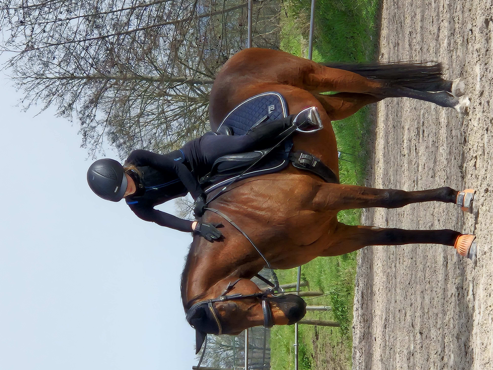

Wirtschaftsingenieurin (B. Eng.) · Online-Marketing-Managerin
Renchen, Baden-Württemberg
Ich begleite Menschen durch Veränderung, strukturiert, verständlich und mit echter Überzeugung. Digitalisierung ist kein Selbstzweck, sondern ein Werkzeug, das Menschen stärkt.
Als Online-Marketing-Managerin habe ich seit 2017 in einer Tierarztpraxis Digitalisierungsprojekte eigenständig geleitet: neue Systeme eingeführt, Workflows automatisiert, Kolleginnen und Kollegen geschult - und dabei immer die Menschen im Blick behalten, nicht nur die Technik.
Parallel dazu habe ich berufsbegleitend meinen Bachelor of Engineering in Wirtschaftsingenieurwesen (Produkt- und Innovationsmanagement) an der AKAD-University absolviert, 30 Stunden Arbeit pro Woche, Studium, und das mit Auszeichnung in Fächern wie Personalmanagement (Note 1,0) und Innovationsmanagement (Note 1,7).
Meine Bachelorarbeit befasste sich mit KI-basierter Prozessoptimierung in der Medizin, ein Thema, das meinen Blick auf digitale Transformation nachhaltig geprägt hat.
Shopware-Einführung, Rechnungsdigitalisierung, Prozessautomatisierung mit über 60 % Zeitersparnis, messbare Ergebnisse statt PowerPoint-Konzepte.
Personalmanagement 1,0, Innovationsmanagement 1,7, Informatik & Programmierung 1,7, Smart Factory 1,3, Projekt 1,3. Theorie, die ich direkt anwenden konnte.
Neue Mitarbeitende einarbeiten, Systeme erklären, Akzeptanz schaffen, das mache ich seit Jahren, nicht erst seit gestern.
Zertifiziert im Coaching. Ich weiß, wie man Menschen dort abholt, wo sie stehen und ihnen Schritt für Schritt Sicherheit gibt.
Methodisch fundierte Analyse und Neugestaltung medizinischer Arbeitsprozesse mit KI-Unterstützung, von der Ist-Analyse über BPMN-Prozessmodellierung bis zur prototypischen Umsetzung.
Die Position reizt mich genau wegen ihrer Verbindung aus Projektarbeit, Schulung und echter Begleitung. Mitarbeitende für neue Arbeitsweisen zu befähigen, digitale Lösungen sinnvoll zu verankern und Wandel aktiv zu gestalten - das ist kein Karriereschritt für mich, das ist mein Weg.
In acht Jahren habe ich gelernt: Veränderung gelingt nicht durch Systeme allein. Sie gelingt, wenn Menschen verstehen, warum, und sich sicher fühlen, mitzugehen. Genau das möchte ich bei EDEKA Südwest einbringen.
Ich habe selbst Systeme eingeführt und kenne den Unterschied zwischen technischer Einführung und echter Verankerung.
Präsenz, digital, E-Learning: Ich entwickle Formate, die wirklich beim Menschen ankommen.
Anforderungsaufnahme, Go-Live, Überführung in den Alltag, das habe ich mehrfach eigenständig geleitet.
Ich suche keine Zwischenstation, ich möchte Teil von etwas Größerem werden und gemeinsam wachsen.

Als zertifizierte Trainerin C im Leistungssport Reiten begleite ich Menschen dabei, Vertrauen aufzubauen, in sich selbst und in das, was neu und ungewohnt ist. Diese Erfahrung hat meine Haltung gegenüber Veränderungsprozessen geprägt wie kaum eine andere.
Im Reitstall wie im Seminarraum gilt dasselbe Prinzip: Präsenz, Geduld und ein klares Ziel. Ich erkläre verständlich, gehe dort hin, wo die Menschen stehen, und begleite sie - Schritt für Schritt.
Gerne würde ich meine Motivation in einem persönlichen Gespräch weiter einbringen und freue mich über die Möglichkeit, Teil Ihres Teams zu werden.